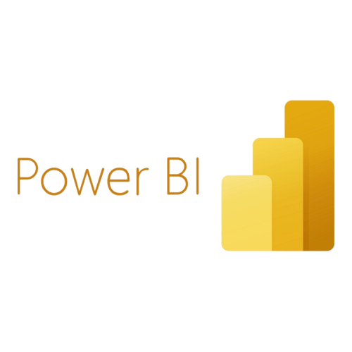
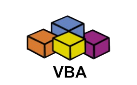

Bem-vindo ao meu portifólio de Ciência Da Computação
Me chamo Marcos Paulo,sou um estudante de Ciência da Computação e atualmente estou no 4º Semestre. Desejo trilhar minha carreira na área de Dados.
Possuo conhecimento e experiência em algumas tecnologias, sendo elas:
Power BI, VBA, PYTHON, SQL e Power Automate




Conheça um pouco sobre meus projetos e experiências clicando no botão ao lado
Portfólio